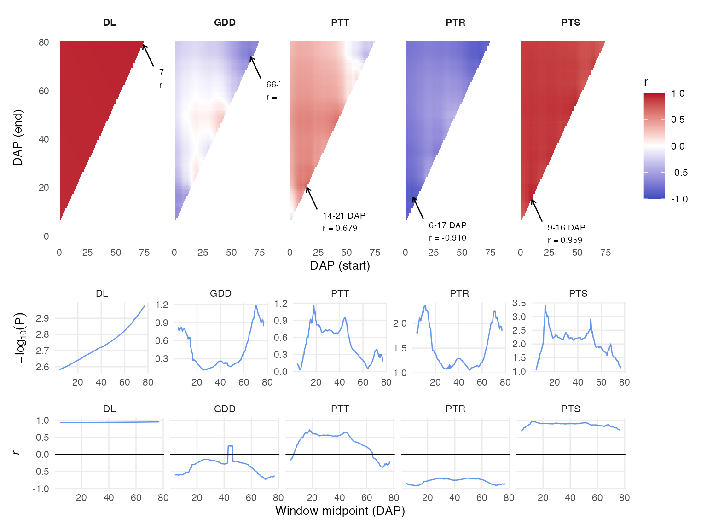
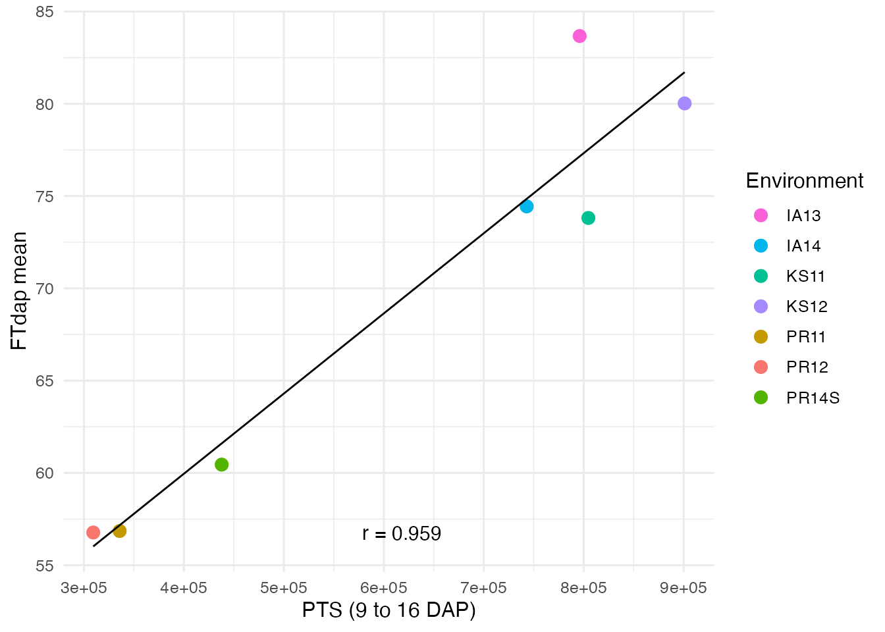
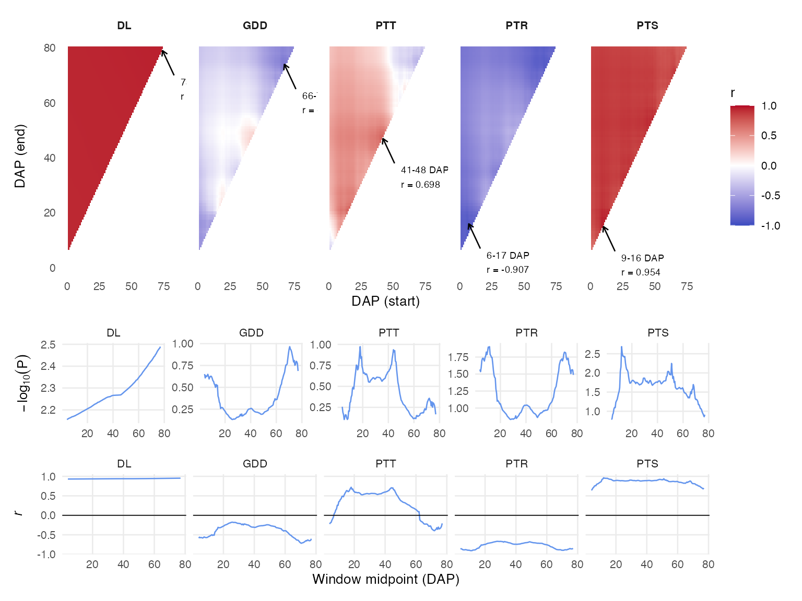

CERIS Search
ceris-search.RmdThis vignette demonstrates the core CERIS analysis: an exhaustive search over all developmental windows and environmental parameters to identify the critical period and factor driving GxE variation. We continue with the sorghum dataset.
library(runCERIS)
sorghum <- load_crop_data("sorghum")
traits <- sorghum$traits
env_meta <- sorghum$env_meta
env_params <- sorghum$env_params
exp_trait <- prepare_trait_data(traits, trait = "FTdap")
env_mean_trait <- compute_env_means(exp_trait, env_meta)
params <- c("DL", "GDD", "PTT", "PTR", "PTS")How the Exhaustive Window Search Works
CERIS tests every possible contiguous window of days after planting
(DAP). A window is defined by a start day (Day_x) and an
end day (Day_y), where Day_x <= Day_y. For
each window and each environmental parameter, the algorithm:
- Computes a summary statistic (e.g., cumulative sum or mean) of the parameter within the window for every environment.
- Correlates that summary with the environmental trait mean across environments.
- Records the Pearson correlation (
R) and its p-value (P).
This nested loop over all (start, end) pairs creates a triangular search space. The result is a complete map of how the trait–environment association changes with the developmental window, for every candidate parameter.
Running the Search
run_CERIS() performs the exhaustive search. The
max_days argument limits the maximum DAP to consider, which
controls both the search space and runtime. Setting
max_days = 80 is a good starting point for sorghum
flowering time:
ceris_result <- run_CERIS(
env_mean_trait,
env_params,
params = params,
max_days = 80,
loo = FALSE,
progress = NULL
)The loo parameter controls whether leave-one-out
cross-validation is performed (see below). Setting
progress = NULL suppresses the progress bar, which is
appropriate for non-interactive use.
Understanding the Output
The result is a data frame with one row per (Day_x, Day_y) combination:
str(ceris_result)
#> 'data.frame': 2775 obs. of 14 variables:
#> $ Day_x : num 1 1 1 1 1 1 1 1 1 1 ...
#> $ Day_y : num 7 8 9 10 11 12 13 14 15 16 ...
#> $ window: num 6 7 8 9 10 11 12 13 14 15 ...
#> $ midXY : num 4 4.5 5 5.5 6 6.5 7 7.5 8 8.5 ...
#> $ R_DL : num 0.927 0.927 0.928 0.928 0.928 ...
#> $ R_GDD : num -0.606 -0.584 -0.582 -0.584 -0.595 ...
#> $ R_PTT : num -0.1714 -0.1299 -0.0799 -0.02 0.0064 ...
#> $ R_PTR : num -0.853 -0.848 -0.857 -0.871 -0.879 ...
#> $ R_PTS : num 0.688 0.694 0.73 0.742 0.779 ...
#> $ P_DL : num 2.58 2.58 2.58 2.59 2.59 ...
#> $ P_GDD : num 0.825 0.773 0.768 0.772 0.799 ...
#> $ P_PTT : num 0.1468 0.1071 0.0631 0.015 0.0047 ...
#> $ P_PTR : num 1.83 1.8 1.86 1.97 2.04 ...
#> $ P_PTS : num 1.06 1.08 1.2 1.25 1.41 ...
head(ceris_result)
#> Day_x Day_y window midXY R_DL R_GDD R_PTT R_PTR R_PTS P_DL P_GDD
#> 1 1 7 6 4.0 0.9273 -0.6057 -0.1714 -0.8528 0.6876 2.5804 0.8254
#> 2 1 8 7 4.5 0.9275 -0.5840 -0.1299 -0.8479 0.6937 2.5823 0.7731
#> 3 1 9 8 5.0 0.9276 -0.5819 -0.0799 -0.8568 0.7298 2.5848 0.7682
#> 4 1 10 9 5.5 0.9277 -0.5835 -0.0200 -0.8713 0.7415 2.5853 0.7719
#> 5 1 11 10 6.0 0.9278 -0.5951 0.0064 -0.8795 0.7790 2.5877 0.7995
#> 6 1 12 11 6.5 0.9279 -0.5821 0.0352 -0.8784 0.7893 2.5889 0.7687
#> P_PTT P_PTR P_PTS
#> 1 0.1468 1.8321 1.0568
#> 2 0.1071 1.7975 1.0765
#> 3 0.0631 1.8608 1.2034
#> 4 0.0150 1.9732 1.2483
#> 5 0.0047 2.0429 1.4088
#> 6 0.0268 2.0328 1.4581The columns are:
| Column | Description |
|---|---|
Day_x |
Start DAP of the window |
Day_y |
End DAP of the window |
window |
Window length (Day_y - Day_x + 1) |
midXY |
Midpoint of the window |
R_<param> |
Pearson correlation for each parameter |
P_<param> |
P-value of the correlation for each parameter |
For example, R_GDD is the correlation between cumulative
GDD within the window and the trait environmental mean. High absolute
correlations with low p-values indicate that the parameter during that
window is a strong predictor of GxE.
Identifying the Best Window
ceris_identify_best() scans the full search result and
identifies the window and parameter with the strongest association. The
min_window argument sets a minimum window length to avoid
spuriously narrow windows:
best <- ceris_identify_best(ceris_result, params = params, min_window = 7)
best
#> $param_name
#> [1] "PTS"
#>
#> $dap_start
#> [1] 9
#>
#> $dap_end
#> [1] 16
#>
#> $correlation
#> [1] 0.9587
#>
#> $neg_log_p
#> [1] 3.1866The returned list contains the best parameter name, the start and end DAP of the optimal window, the correlation value, and the negative log p-value. This is the headline result of the CERIS analysis.
Visualizing the Search: Heatmap
plot_ceris_heatmap() displays the full search result as
a set of triangular heatmaps, one per parameter. The x-axis is the
window start day, the y-axis is the window end day, and the color
encodes the correlation strength:
plot_ceris_heatmap(ceris_result, params = params, max_days = 80)
Look for “hot spots” — regions of consistently strong correlation. A well- defined hot spot indicates a robust critical window. Diffuse patterns suggest the association is spread across a broader developmental period.
The plot also includes marginal traces showing how the best correlation varies with the window start and end days individually.
Computing Window Parameters
Once you have identified the best window, use
compute_window_params() to calculate the parameter summary
for that window in each environment. This adds a kPara
column to the environmental means data frame:
env_mean_enriched <- compute_window_params(
env_mean_trait,
env_params,
dap_start = best$dap_start,
dap_end = best$dap_end,
params = best$param_name
)
head(env_mean_enriched)
#> env_code meanY env_notes lat lon PlantingDate TrialYear Location
#> 1 PR12 56.77317 2 18.0373 -66.7963 2011-12-12 2011 PR
#> 2 PR11 56.85371 1 18.0373 -66.7963 2010-12-04 2010 PR
#> 3 PR14S 60.45186 7 18.0373 -66.7963 2014-06-05 2014 PR
#> 4 KS11 73.81378 3 39.1836 -96.5717 2011-06-08 2011 KS
#> 5 IA14 74.44027 6 42.0308 -93.6319 2014-06-10 2014 IA
#> 6 KS12 80.02100 4 39.1836 -96.5717 2012-06-07 2012 KS
#> kPara
#> 1 309321.4
#> 2 335746.3
#> 3 437819.6
#> 4 804678.1
#> 5 742952.3
#> 6 900995.8The kPara column contains the computed value of the best
parameter within the identified window for each environment. This is the
environmental covariate that best predicts the trait variation.
Correlation Scatter Plot
plot_trait_env_param() visualizes the relationship
between the trait environmental mean and the windowed parameter:
env_colors <- setNames(
scales::hue_pal()(nrow(env_mean_trait)),
env_mean_trait$env_code
)
plot_trait_env_param(
env_mean_enriched,
trait = "FTdap",
kpara_name = best$param_name,
dap_start = best$dap_start,
dap_end = best$dap_end,
env_colors = env_colors
)
A tight linear relationship confirms that the identified window and parameter capture the dominant environmental driver. Points that deviate from the trend may indicate environments where additional factors are at play.
Leave-One-Out Cross-Validation
The standard CERIS search uses all environments to compute
correlations. To assess robustness, you can enable leave-one-out (LOO)
cross-validation by setting loo = TRUE. In LOO mode, each
environment is held out in turn and the search is repeated on the
remaining environments. This provides an honest estimate of predictive
performance:
ceris_loo <- run_CERIS(
env_mean_trait,
env_params,
params = params,
max_days = 80,
loo = TRUE,
progress = NULL
)The LOO result has the same structure as the standard result. You can
pass it to ceris_identify_best() and the visualization
functions in the same way:
best_loo <- ceris_identify_best(ceris_loo, params = params, min_window = 7)
best_loo
#> $param_name
#> [1] "PTS"
#>
#> $dap_start
#> [1] 9
#>
#> $dap_end
#> [1] 16
#>
#> $correlation
#> [1] 0.9541
#>
#> $neg_log_p
#> [1] 2.5064If the LOO result agrees with the full-data result (same parameter, similar window), you can be confident that the finding is robust and not driven by a single outlier environment.
plot_ceris_heatmap(ceris_loo, params = params, max_days = 80)
Summary
The CERIS search workflow is:
-
Run
run_CERIS()to compute correlations for all windows and parameters. -
Use
ceris_identify_best()to find the optimal window and parameter. -
Visualize with
plot_ceris_heatmap()to inspect the full search landscape. -
Extract the window parameter with
compute_window_params()and plot the trait–parameter relationship withplot_trait_env_param(). -
Validate with LOO (
loo = TRUE) to confirm robustness.
This systematic approach turns the complex GxE problem into an interpretable result: a specific environmental factor, during a specific developmental window, that explains why genotypes perform differently across environments.